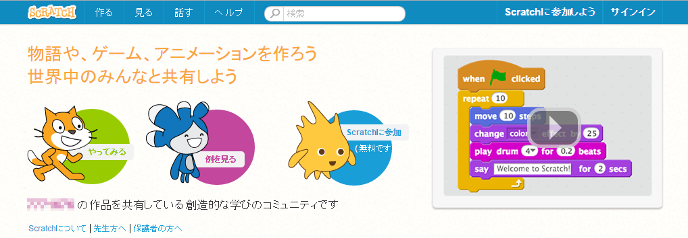
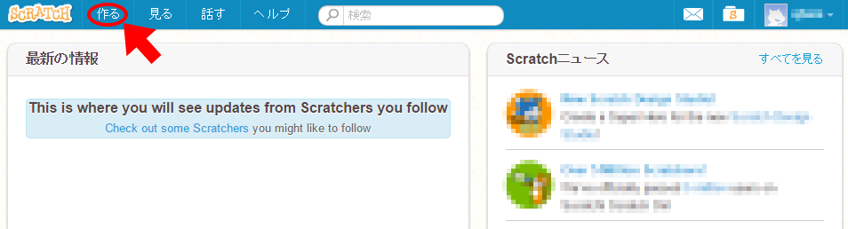
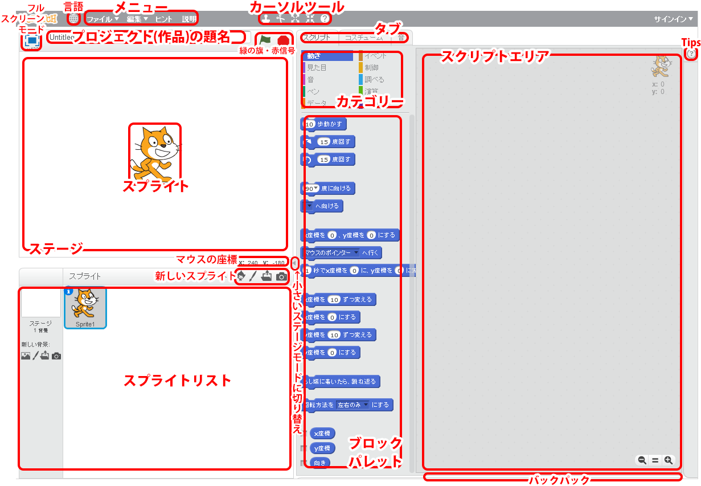
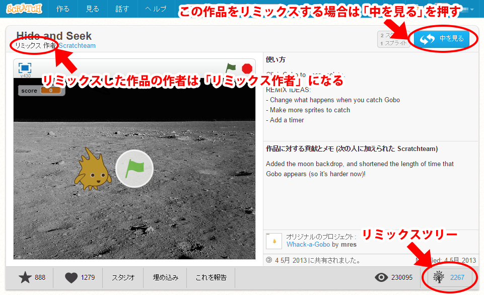
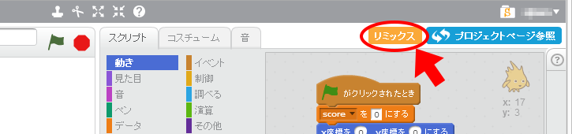

すくらっちScratchのはじめかた
がいよう概要
このページは、おも主にすくらっちScratchに てん ぜろ2.0のしょほてき初歩的なつか使いかた方のほそく補足せつめい説明をしています。
さくひん作品づくり - プロジェクトのさくせい作成 -
http://scratch.mit.edu/にアクセスします。
サインインをしていないばあい場合は、つぎ次のようながめん画面がひょうじ表示されます。

アカウントをも持っているばあい場合は、まず、がめん画面みぎうえ右上の「サインイン」からサインインしましょう。
アカウントをも持っていないばあい場合は、さき先に「サインイン」のとなり隣にある「すくらっちScratchにさんか参加しよう」をクリックしてアカウントをさくせい作成します。
（アカウントをも持っていなくてもす直ぐにプロジェクトをかいし開始することができ出来ますが、さくせい作成したプロジェクトをほぞん保存することができません。）
あたら新しいさくひん作品をさくせい作成（あたら新しいプロジェクトをかいし開始）するには、がめん画面ひだりうえ左上の「つく作る」をクリックします。

「つく作る」をクリックすると、あたら新しいプロジェクトのがめん画面がきどう起動します。

このがめん画面でものがたり物語やゲーム、アニメーションをつく作っていくことができます。
ここではぐたいてき具体的なないよう内容はせつめい説明しません。
さくひん作品をつう通じてせかい世界とつな繋がろう
すくらっちScratchでこうかい公開されているさくひん作品は、だれ誰でもじゆう自由にリミックスすることができます。つまりさくひん作品をこうかい公開すると、そのさくひん作品のアイデアやがぞう画像などすべて全てのものを、ほか他のユーザがじゆう自由にりよう利用できるようになります。
（※さんこう参考：すくらっちScratchコミュニティーのガイドライン）
リミックスのやりかた

リミックスするには、ひだり左のがめん画面のように、ほか他の人のリミックスしたいさくひん作品をひょうじ表示します。
ちなみに、みぎした右下の「リミックスツリー」をクリックすると、げんさく原作とリミックスさくひん作品のかんけいせい関係性をみ見ることができます。

ひょうじちゅう表示中のさくひん作品をリミックスしたいばあい場合は「なか中をみ見る」→「リミックス」をえら選びます。
リミックスしたさくひん作品は「きょうゆう共有」をお押すまではこうかい公開されません。
むりょう無料ですくらっちScratchのべんきょう勉強ができるサイト
ここにか書いてあるものは、ほんのいちれい一例です。
ほごしゃ保護者のかた方といっしょ一緒に、インターネットでじぶん自分のべんきょうほうほう勉強方法にぴったりあ合ったすくらっちScratchにゅうもん入門サイトをさが探してみ見てくだ下さい。
- こ子どもでもわかるすくらっちSCRATCHにゅうもん入門
しょしんしゃ初心者のためのプログラミングにゅうもん入門とゲームプログラムのつく作りかた方にゅうもん入門のじょうほう情報をていきょう提供している「プログラミングとゲームのもり杜」のなか中のきじ記事です。
アカウントのとうろく登録ほうほう方法からすうしゅるい数種類のゲームのつく作りかた方ややく役だ立つじょうほう情報まで、ずかい図解でていねい丁寧にせつめい説明してくれています。
- すくらっちScratchにゅうもん入門 (ぜん全じゅうごかい15回)
さんぷん3分どうが動画でマスターするしょしんしゃ初心者む向けプログラミングがくしゅう学習サイト「ドットインストール」にあるScratch入門です。レッスンはバージョンいってん よん1.4をしよう使用しています。ゲームをつく作って、すくらっちScratchのサイトでプロジェクトをきょうゆう共有してこうかい公開するところまでまな学ぶことができます。
さくひん作品づくりのことでちょくせつ直接だれ誰かにそうだん相談したいとき時は…